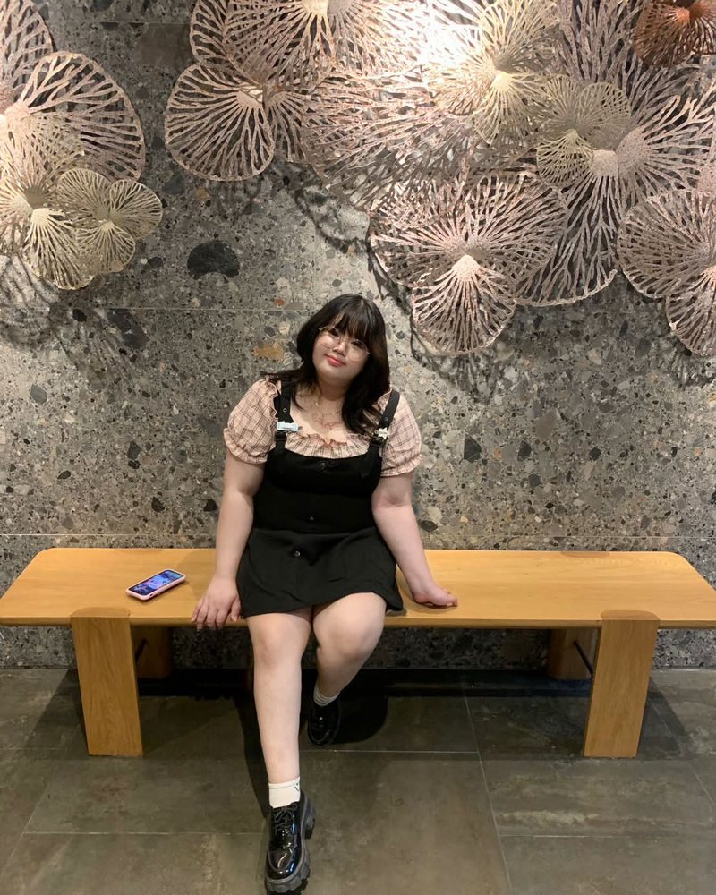
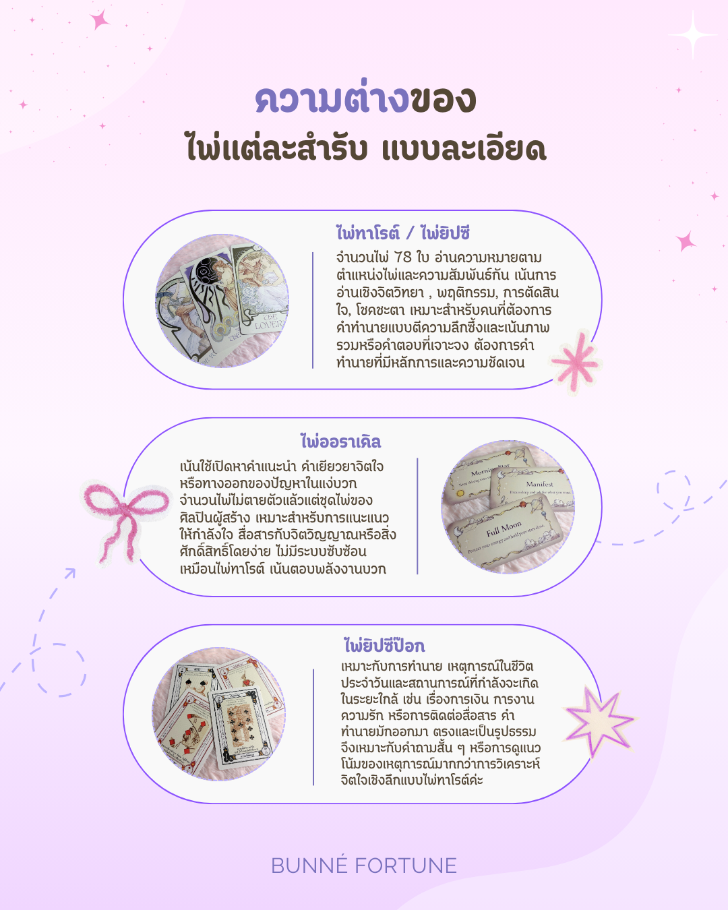

Bunné
Fortune
ให้ไพ่ช่วยหาคำตอบ แล้วเดินต่ออย่างสบายใจนะคะ ✨
💬 พูดคุยกันก่อนดูดวง 🎐

- ชื่อ
- แม่หมอเบลลี่
- ตำแหน่ง
- Tarot & Oracle Reader
- สำรับ
- ทาโรต์ · ออราเคิล · ยิปซีป๊อก
- รับคิว
- ผ่าน LINE เท่านั้น

รับคิวแค่ในไลน์เท่านั้น
ไม่ตอบแชทไอจีค่ะ
แตะบัตรเพื่อพลิกดูด้านหลัง
สวัสดีค่ะ ✨
แม่หมอยินดีที่ได้เป็นคนเปิดดวงทำนายและเป็นส่วนหนึ่งในการช่วยหาคำตอบให้ลูกดวงทุกคนนะคะ
แม่หมอจะถนัดใช้ศาสตร์ในการดูดวงด้วยไพ่ทาโรต์ , ไพ่ออราเคิล และศาสตร์ไพ่อื่นอีกสำรับ ซึ่งจะเน้นให้คำทำนายไปที่ภาพรวม แนวโน้ม ความชัดเจน ตรงจุด และให้คำแนะนำสำหรับลูกดวงแต่ละเคสว่าควรทำแบบไหนให้มันเหมาะกับตัวเรามากที่สุด หรือหากไม่เข้าใจ อยากปรึกษาเพิ่ม แม่หมอก็ยินดีเป็นคนรับฟังและช่วยให้คำแนะนำเพิ่มเติม เพื่อไขข้อสงสัย เพิ่มตัวเลือกและช่วยในการประกอบการตัดสินใจของตัวลูกดวงให้ง่ายยิ่งขึ้นนะคะ
🚫 สิ่งที่แม่หมอไม่รับดู คือ อะไรก็ตามที่ผิดกฎหมาย และอายุขัยความเป็นความตายค่ะ
🃏 ความต่างของไพ่แต่ละสำรับ

แตะที่รูปเพื่อขยายดูได้เลยค่ะ 🔍
🍥 Rule การดูดวงของร้าน ❕
ห้ามถามคำถามซ้อนคำถาม เช่น การงานและการเงินเป็นยังไงบ้าง / เขารักเราไหมจะกลับมาไหม / ควรเปิดร้านช่วงไหนดีรายได้จะดีไหม คือคำถามซ้อนคำถามนะคะ ตรวจทานให้ดีก่อน เข้าใจว่าร้อนใจแต่ต้องเช็คคำถามเพื่อให้ไพ่ขึ้นคำทำนายที่ชัดเจนที่สุดค่ะ
รบกวนไม่ทักแชทซ้ำหากยังไม่ถึงเวลานัด หากทักซ้ำต้องนับคิวใหม่เพื่อไม่ให้ลูกดวงท่านอื่นรอนานเกินไปนะคะ
ห้ามดูคำถามเดิม ๆ เรื่องเดิม ๆ ซ้ำเกิน 3 ครั้งต่อ 1 วัน หรือดูคำถามเดิม ๆ ถี่เกินไป ไม่งั้นดวงอาจจะเคลื่อนได้ค่ะ
กรณีที่โอนเงินเกิน แม่หมอไม่มีมาตรการโอนเงินคืนแต่อย่างใด จะเพิ่มคำถามให้ตามความเหมาะสมแทน กรณีโอนผิดบัญชีเพราะไม่ได้ตรวจทานให้ดี แม่หมอไม่รับผิดชอบนะคะ
ดูดวงเพื่อความสบายใจ ดูเพื่อหาทางออกเพิ่มเติมอย่ายึดติดกับคำพยากรณ์ที่ยังไม่เป็นรูปธรรมจนเกินไป อะไรดีเราทำต่อไป อะไรที่ดูท่าจะไม่ดีก็คอยปรับตามที่ไพ่แนะนำ ขึ้นชื่อว่าดวงชะตามันสามารถเปลี่ยนไปได้ตลอดเวลาตามใจเราตัดสินใจ อยู่ที่ตัวเราเลือกเดินด้วยส่วนหนึ่งนะคะ เราเชื่อมั่นในตัวเองและดูดวงเพื่อเป็นแนวทางเพื่อทำให้เราเดินหน้าต่อในการใช้ชีวิตอย่างสบายใจเป็นพอค่ะ